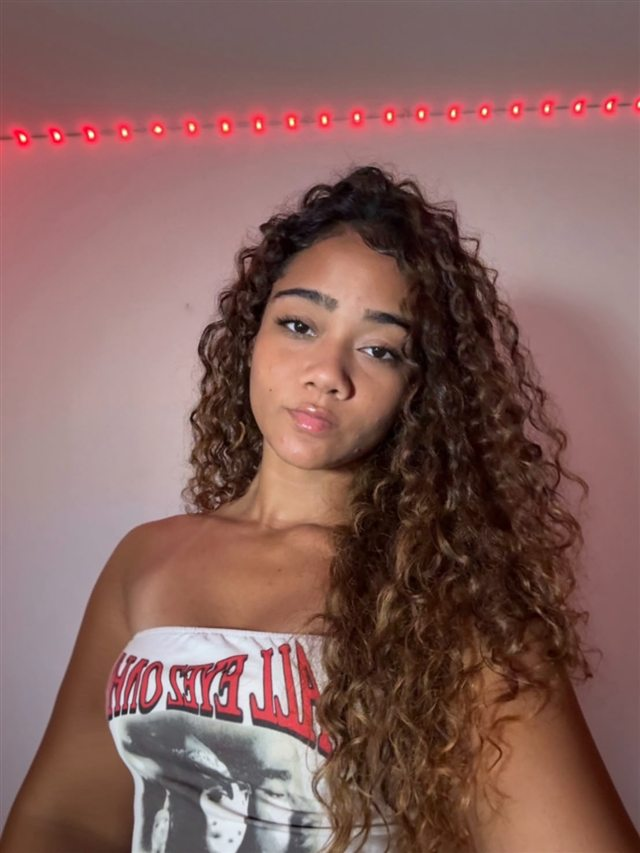

Ágata
entre design e código.
UX/UI Designer · Desenvolvedora Web · Front-end
manifesto.txt
Transformo problemas em experiências digitais intuitivas, unindo pesquisa, design e tecnologia.
Disponível para estágio e freelasProjetos
Estudos de caso selecionados2026
Aprende+: educação que conecta e transforma
Uma plataforma educacional que une inteligência artificial, interatividade e design acessível para transformar a forma como estudantes da rede pública aprendem. Com conteúdos conectados ao cotidiano e um tutor inteligente, o Aprende+ torna o aprendizado mais intuitivo, envolvente e personalizado.
Ver estudo de casoGovTech
App mobile · Serviços públicos
Regulariza BR: menos burocracia, mais clareza
Proposta de app para motoristas entenderem pendências, débitos e prazos e regularizarem o veículo em uma jornada simples.
Ver estudo de casoFull Stack
App mobile · Full Stack
CINOVA: gestão predial conectada
App em React Native integrado a uma API Node.js com Prisma e PostgreSQL, para organizar ordens de serviço entre moradores, técnicos e síndicos.
Ver estudo de casoProcesso
Como eu trabalho · bastidores reaisCada projeto passa por quatro fases. Antes das telas finais, vem o papel, o quadro e muita pergunta. Aqui estão os bastidores reais: o quadro da fase 01 é do projeto Regulariza Brasil; os esboços das fases 02 a 04 são do Aprende+.
01 · Descobrir
Entender antes de desenhar
Investigo o contexto, observo dificuldades e procuro entender as necessidades reais antes de pensar na solução.
- Problema
- Público
- Necessidades do usuário
- Primeiro fluxo
problema → público → necessidades → solução
02 · Definir
Dar forma ao que importa
Organizo informações, estruturo fluxos e transformo necessidades em uma base clara para o projeto.
- Autenticação: login, cadastro e senha
- Onboarding em três perguntas
03 · Idear
Começar no papel
Exploro possibilidades com wireframes, fluxos e esboços antes de avançar para decisões visuais mais refinadas.
- Videoaula → conclusão → quiz → resumo
- Setas desenhando o fluxo entre telas
04 · Entregar
Do rascunho ao protótipo
Transformo os esboços em interfaces refinadas, protótipos navegáveis e materiais organizados para desenvolvimento.
Sobre
Tecnologia, criatividade e pessoas
Acho que meu interesse por UX/UI e por desenvolvimento começou muito antes de eu saber o que essas letras significavam. Quando criança, eu me perguntava por que uma máquina de caixa eletrônico precisava de tantos botões para realizar uma tarefa tão simples. Hoje, continuo fazendo perguntas parecidas, mas, em vez de apenas tentar entender interfaces complicadas, busco criar experiências tão intuitivas que ninguém precise se perguntar onde clicar.
Sou Ágata Giovanna, tenho 20 anos e curso o 5º período de Sistemas de Informação no Centro de Informática (CIn) da UFPE. Minha trajetória também passou pelo Instituto Federal de Pernambuco (IFPE), onde ampliei meu contato com a criatividade e o design.
Hoje, encontro no UX/UI e no desenvolvimento web front-end a união entre tecnologia, criatividade e resolução de problemas: desenho a experiência e também sei levá-la para o código. Meu objetivo é transformar necessidades reais em experiências digitais acessíveis, funcionais e que façam sentido para as pessoas.